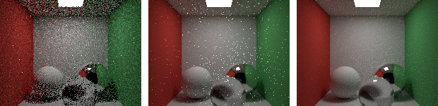
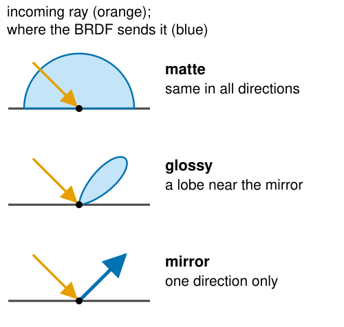
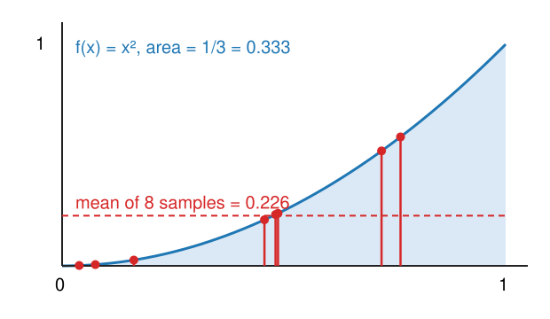
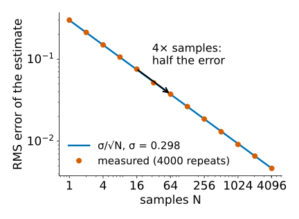
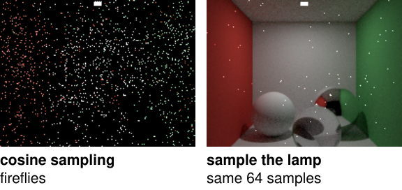
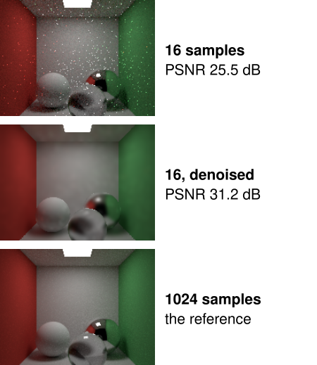

Path tracing: the rendering equation, Monte Carlo and noise
Image analysis
About this lecture
Whitted’s ray tracer follows a few special directions. Real light arrives at every point from all directions. This unit turns that into one integral and estimates it with random rays.
Radiance, the BRDF, and the rendering equation in words.
Monte Carlo integration: averaging random samples; unbiased, with noise that falls as 1/\sqrt N.
Path tracing: one random path per sample, many samples per pixel.
Importance sampling: where to send the rays; fireflies; and a wrong image from a bad choice.
Denoising a rendered image: the deconvolution day’s problem again.
Slides titled The math give the formulas and proofs; the ideas are complete without them.
What Whitted misses

A closed box: white floor, ceiling and back wall, a red and a green wall, a square lamp in the ceiling, three balls (diffuse, mirror, glass). Path traced with 1, 16 and 256 samples per pixel.
The white walls near the red wall turn pinkish: light bounces off the red wall onto them (colour bleeding).
The shadows are soft: the lamp has an area.
Under the glass ball: a bright spot of focused light (a caustic).
And: noise, which shrinks as the number of samples grows.
Radiance and the BRDF
RadianceL: the light travelling along one ray, per direction. It does not change along a ray in empty space: what leaves one surface arrives at the next.
A surface takes light arriving from one direction and sends some of it into another. The BRDFf_r says how much, for every pair of directions.
Lambertian (matte): the same in every outgoing direction, f_r = \rho/\pi, with albedo\rho = the fraction of light reflected.
Mirror: everything into one direction (the BRDF is a spike).
Glossy surfaces lie in between.
Light that hits a surface at a slant is spread over a larger area: a factor \cos\theta (Lambert’s cosine of the 3D graphics day).

The rendering equation
Light leaving a point towards the eye = light it emits + the sum, over all incoming directions, of (incoming light × BRDF × cosine). (Kajiya, 1986)
The incoming light from a direction is the outgoing light of whatever point that direction hits, which itself depends on the light arriving there, and so on: the whole scene is inside the equation.
Expanding it: emitted light + light that bounced once + twice + …
Whitted keeps only the mirror and refraction terms and point lights.
“Direct light only” stops after one bounce.
Recall Seeing voxels: the emission–absorption integral along a ray is the same bookkeeping, without bouncing.
\Omega: the hemisphere of directions above the surface; d\boldsymbol\omega: solid angle; \theta_i: angle between \boldsymbol\omega_i and the normal.
In operator form L = L_e + \mathcal K L, with \mathcal K “bounce once”. Solution L = L_e + \mathcal K L_e + \mathcal K^2 L_e + \dots (a Neumann series), convergent because every bounce loses energy (\rho < 1).
A path tracer estimates each term with random directions, and all of them at once by following a random path.
Monte Carlo: integrals by random samples

Estimate the area under a curve on [0, 1]: pick random points x_1, \dots, x_N, evaluate the curve, average.
8 random points under f(x) = x^2 (true area 1/3): mean 0.226. Another 8 give another value.
Throwing darts at a square and counting those inside a circle estimates \pi the same way.
Unbiased: right on average; each estimate is off by random noise.
Why bother, when a 1D integral is easy? Because the rendering equation is an integral over directions, at every bounce, over all paths: hundreds of dimensions. Grids are hopeless there; random samples do not care about the dimension.
The noise falls as 1/\sqrt N
The error of a Monte Carlo estimate is random, with standard deviation \sigma/\sqrt N:
\sigma: how much one sample varies; N: the number of samples.
4× the samples halve the noise; 100× give one more decimal digit.
In PSNR (recall Camera noise, SNR and PSNR): +3 dB per doubling of N, +12 dB from 16 to 256 samples per pixel.
The same law as averaging N beads (Resolution) and as shot noise: a path tracer is a simulated camera counting simulated photons, and its noise is the same kind as a real camera’s.

The math: unbiased, with variance \sigma^2/N
Draw X_1, \dots, X_N independently from a density p (with p > 0 wherever f \ne 0):
Start a ray from the eye through a random point in the pixel.
At the hit, add light if it is a lamp. Otherwise pick one random new direction (from the BRDF: a random direction for a matte surface, the mirror direction for a mirror, reflect or refract with probabilities R and 1 - R for glass).
Multiply the path’s throughput by BRDF × cosine ÷ pdf; continue from the hit.
Stop at a lamp, when the path leaves the scene, after a maximum number of bounces, or by Russian roulette (stop at random, and boost the survivors to stay unbiased).
One path per sample, not a tree: the work goes into more samples instead of more branches. Progressive rendering keeps a running mean per pixel; the image sharpens as you watch. Accumulate in linear light and convert to sRGB only for display (recall RGB: gamma, linear maps and white balance).
The math: the Lambertian BRDF and cosine sampling
In spherical coordinates, \int_\Omega\cos\theta\,d\omega = \int_0^{2\pi}\!\!\int_0^{\pi/2}\cos\theta\sin\theta\,d\theta\,d\phi = \pi. A matte surface that reflects the fraction \rho of the light under uniform illumination needs f_r\cdot\pi = \rho: f_r = \rho/\pi.
Uniform directions on the hemisphere: p = 1/(2\pi), weight f_r L_i\cos\theta/p = 2\rho L_i\cos\theta.
Cosine-weighted directions: p = \cos\theta/\pi, weight = \rho\,L_i: the cosine and the \pi cancel. Under a constant sky (L_i = const) every sample gives exactly \rho L_i: zero variance.
Sampling it (Malley’s method): a uniform random point on the unit disc, lifted straight up onto the hemisphere.
Importance sampling
Send the samples where the integrand is large, and divide by the pdf so that the average stays right.
Matte surface: cosine sampling (directions near the normal matter most).
Small bright lamp: sample the lamp directly (next-event estimation): at every matte hit, pick a point on the lamp and send a shadow ray to it.
Without that, a tiny lamp is found by chance, rarely, and then gives a huge sample: fireflies, isolated bright pixels that average out very slowly.
A pdf that is zero where light comes from never sees that light: the image is wrong (biased), not just noisy, and more samples do not help.
Best of both: combine several pdfs (multiple importance sampling).

The math: zero variance, Russian roulette, lamp sampling
Ideal pdf: p = f/\int f makes f/p constant: zero variance. It needs the answer; it tells us to make plook likef.
Russian roulette: continue a path with probability q and divide its contribution by q: \mathbb E = q\cdot\frac{X}{q} + (1 - q)\cdot 0 = \mathbb E[X]. Unbiased; it adds variance but saves work on dim paths.
Sampling the lamp: pick a point \mathbf y uniformly on the lamp (area A, density 1/A) and change variables from solid angle to area: d\omega = \frac{\cos\theta_\ell}{\lVert\mathbf x - \mathbf y\rVert^2}\,dA \quad\Rightarrow\quad \text{direct light} \approx f_r\,L_e\,\frac{\cos\theta_x\cos\theta_\ell}{\lVert\mathbf x - \mathbf y\rVert^2}\,A\cdot V(\mathbf x, \mathbf y), with V = 1 if the shadow ray from \mathbf x to \mathbf y is free. A lamp hit by a random bounce is then not counted again.
Try it: a path tracer
Denoising a rendered image
At 16 samples per pixel the image is noisy; reaching the noise of 1024 samples by brute force costs 64× the time. Instead, denoise: recall Denoising, artefacts, and what you may measure.
Gaussian, bilateral, non-local means work here too: the noise is (nearly) independent per pixel.
A renderer has a bonus: it knows each pixel’s normal, depth and albedo without noise (the first hit). A joint (cross) bilateral filter takes its “similar?” weights from these guides: it smooths within a surface and stops at geometric edges.
A denoised image is an estimate: less variance, but biased. A shadow edge or a caustic has no edge in the guides, so it is blurred; fine texture is lost.
Real-time ray tracing uses a few samples per pixel plus learned denoisers (the modern deep learning day).

Where this connects
Light in tissue: Monte Carlo simulation of photons that scatter and are absorbed is this method with a scattering medium, used to model light in thick samples.
Volume rendering is the special case without scattering: one ray, emission and absorption (Seeing voxels).
Neural view synthesis (radiance fields) renders with exactly that compositing along rays, not with surface hits: the geometry-from-images day.
Monte Carlo reappears wherever an integral is too high-dimensional for a grid: expectations in the VAE’s training objective, uncertainty of measurements by resampling.
Summary
The rendering equation: outgoing = emitted + ∫ incoming × BRDF × cosine over all directions; the scene is inside the integral.
Monte Carlo: average f/p at random samples drawn from p; unbiased; RMS error \sigma/\sqrt N: 4× samples, half the noise; +3 dB per doubling.
Path tracing: one random path per sample; soft shadows, colour bleeding and caustics come out by themselves.
Importance sampling: make p look like the integrand; cosine-weighted for matte surfaces (zero variance under a constant sky); sample small lamps directly to avoid fireflies; never let p = 0 where light comes from.
Denoising trades variance for bias; a renderer’s normal, albedo and depth guide it.